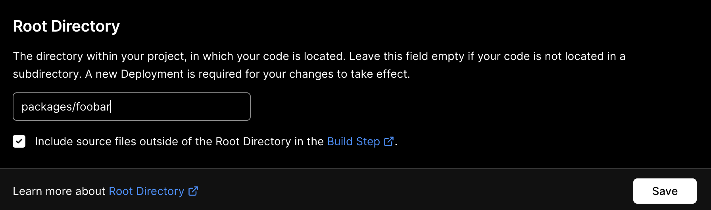
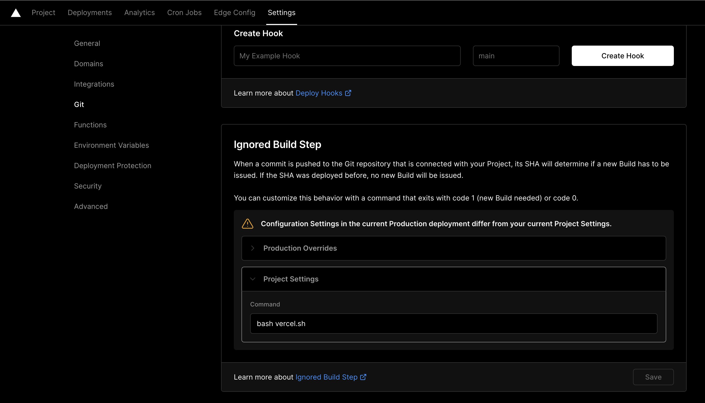

Given a mono-repository with multiple packages, e.g. yarn workspaces:
Add a new Vercel project for each package which you want deployed
Change the root directory to the package, e.g.:

Ignored Build Step:
chmod a+x, commit and push. It will only build if:
preview#!/usr/bin/env bash
echo VERCEL_ENV=$VERCEL_ENV
echo VERCEL_GIT_COMMIT_REF=$VERCEL_GIT_COMMIT_REF
# Check for preview environment
if [ "$VERCEL_ENV" == "preview" ]; then
echo "[debug] Is preview environment"
# Check if branch name contains "preview"
if [[ "$VERCEL_GIT_COMMIT_REF" == *"preview"* ]]; then
echo "[debug] Is correct branch"
# Check for changes to the current directory
CHANGES=$(git diff HEAD^ HEAD --quiet .;echo $?)
echo "[debug] Change status: $CHANGES"
exit $CHANGES
else
echo "[debug] Is not preview environment"
fi
else
echo "[debug] Is not preview environment"
fi
exit 0